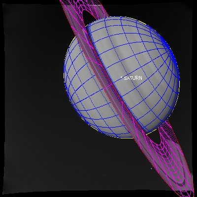

./
saturn_example.pro
batch fileSaturn Example
This example file uses Saturn and its rings to show various capabilities of the software. This includes fitting the limb and rings simultaneously, hiding the limb and/or rings wrt other objects in the field of view, plotting radial and longitudinal sectors on the ring and mapping the saturn cloud tops.
This example file can be executed from the UNIX command line using:
ominas ominas saturn_example
@saturn_example
Image read and display

This first section uses dat_read to read in the image. The image file c3440346.gem is a Voyager VICAR format file where the image has had the camera distortions removed with the VICAR program GEOMA. dat_read reads the image portion (im) and the image label (label) and its output is a data descriptor (dd). ctmod is called to reserve several colors in the case of an 8-bit display. tvim is called to display the image (im) at 1/2 size in a new window with the y coordinate as top-down.
For Example:
dd = dat_read(getenv('OMINAS_DIR')+'/demo/data/c3440346.gem', im, label)
tvim, im, zoom=0.5, /order, /new
Obtaining the descriptors
This section obtains the camera descriptor (cd), the planet descriptor (pd) and the ring descriptor (rd) for use by the software. In this example, the various elements of these descriptors are overridden with values that causes the software not to try to read these values from a detached header or through a translator that would access the data from the default source.
Change override to zero to read the data through the translators instead:
override=1
if(override) then $
cd = pg_get_cameras(dd, /over, $
name='VGR1_ISS_NA', $
orient= $
[ [-0.177287575, -0.966450211, -0.185857758 ], $
[ 0.507898045, -0.251604865, 0.823853487 ], $
[ 0.842976092, -0.051662194, -0.535464589 ] ], $
avel=tr([0.0, 0.0, 0.0]), $
pos=tr([0.0, 0.0, 0.0]), $
vel=tr([0.0, 0.0, 0.0]), $
time=972603249.d, $
scale=[7.858656e-06,7.858656e-06], $
oaxis=[499.0,499.0], $
size=[1000,1000], $
fn_focal_to_image='cam_focal_to_image_linear', $
fn_image_to_focal='cam_image_to_focal_linear', $
fi_data=ptr_new())
if(override) then $
pd = pg_get_planets(dd, od=cd, /over, $
name='SATURN', $
orient= $
[ [-0.254669368, 0.963251789, 0.085378596], $
[-0.962535206, -0.260997177, 0.073528563], $
[ 0.093110093, -0.063454432, 0.993631746] ], $
avel=tr([0.0854, 0.0732, 0.9937])*1.74e-4, $
pos=tr([-23433172000.0, -6105736000.0, -1223129375.0]), $
vel=[ tr([9500.0, 0.0, 0.0]), $
tr([0.0, 0.1, 0.0]) ], $
time=972603249.d, $
radii=[60268000.,60268000.,54364000.], $
lora=0.0)
if(override) then $
rd = pg_get_rings(dd, pd=pd, od=cd, /over, $
name='MAIN_RING_SYSTEM', $
primary=pd, $
orient= $
[ [-0.254669368, 0.963251789, 0.085378596], $
[-0.962535206, -0.260997177, 0.073528563], $
[ 0.093110093, -0.063454432, 0.993631746] ], $
avel=tr([0.0854, 0.0732, 0.9937])*1.74e-4, $
pos=tr([-23433172000.0, -6105736000.0, -1223129375.0]), $
vel=[tr([9500.0, 0.0, 0.0]), $
tr([0.0, 0.1, 0.0]) ] , $
time=972603249.d, $
sma=tr([75000000.0,136800000.0]), $
ecc=tr([0.0, 0.0]))
if(override) then $
sund = pg_get_stars(dd, od=cd, /over, $
name='SUN', $
pos=tr([1.421392d12,4.3105676d10,-4.3613585d10]))
if(NOT override) then cd = pg_get_cameras(dd)
if(NOT override) then pd = pg_get_planets(dd, od=cd)
if(NOT override) then rd = pg_get_rings(dd, pd=pd, od=cd, '/system')
if(NOT override) then sund = pg_get_stars(dd, od=cd, name='SUN')
This example, commented out, shows how two objects can be included in one planet descriptor.
Filling the generic descriptor
This line fills a "generic" descriptor. This is a convenience feature where in several descriptors are grouped into a structure that can be passed to functions in one piece.
cd - camera descriptor part gbx - globe descriptor part dkx - disk descriptor part:
gd = {cd:cd, gbx:pd, dkx:rd, sund:sund}
Calculating the limb, ring and planet center
Determining the plot characteristics
This section uses pg_limb to calculate the limb point structure (limb_ptd) containing the limb points, the ring point structure (ring_ptd) and also the planet center (center_ptd) using the routine pg_center. It uses the generic descriptor (gd) to pass the camera, planet and ring descriptors to these routines. It also uses pg_hide to remove (/rm) points from the ring from the limb points and then again to remove the ring points covered by the planet. It then groups each of these into object_ptd for plotting. The colors, psyms, psizes and plables variables are defined for the plot. The center is drawn in the default color (!p.color), the limb is in yellow (ctyellow) and the inner and outer ring are in red (ctred). Here you can see that each ring is treated as two objects (inner and outer) when defining plot characteristics. With an 8-bit display, these color routines return the values that were previously reserved in the color table with ctmod; with a 24-bit display, these routines return the true color values for these colors. nlimb stores the number of points in the limb_ptd structure, nring, the number of points in the ring point structure. In plabels, the limb and ring's name is not plotted since it would be plotted at the center of the object:
limb_ptd = pg_limb(gd=gd) & pg_hide, limb_ptd, gd=gd, bx=rd
ring_ptd = pg_disk(gd=gd) & pg_hide, ring_ptd, gd=gd, bx=pd
shadow_ptd = pg_shadow_globe(gd=gd, ring_ptd)
center_ptd = pg_center(gd=gd, bx=pd)
object_ptd = [center_ptd,limb_ptd,ring_ptd,shadow_ptd]
colors = [!p.color,ctyellow(),ctred(),ctred(),ctblue()] & psyms=[1,3,3,3,3] & psizes=[0.5]
plabels = [cor_name(pd), '', '']
nlimb = n_elements(limb_ptd)
nring = n_elements(ring_ptd)
Drawing the limb, ring and planet center

This section draws the objects in the object structure (center, limb and ring) with the colors and plot symbols and labels defined earlier. Notice how the limb and ring curves cut off at the points of intersection between the objects:
pg_draw, object_ptd, colors=colors, psyms=psyms, psizes=psizes, plabel=plabels
Draw planet and ring latitude/longitude grid

This sections calculates a latitude/longitude grid for the planet and a radius/longitude grid for the rings. By default it draws 12 latitude and 12 longitude grid lines. The longitude grid lines circle the body and so on a map they will appear as 24 grid lines. The ring radius grid uses four grid lines by default between the inner and outer ring radius. It uses pg_hide to set as not visible the points on the grid behind the planet and ring for both objects. It then uses pg_draw to draw the planet grid points in blue (ctblue) and the ring grid points in purple (ctpurple).
Here is where the example then stops:
grid_ptd = pg_grid(gd=gd, bx=pd)
pg_hide, grid_ptd, gd=gd, bx=pd, /assoc
pg_hide, grid_ptd, gd=gd, bx=rd
pg_draw, grid_ptd, color=ctblue()
dgrid_ptd = pg_grid(gd=gd, bx=rd) & pg_hide, dgrid_ptd, gd=gd, bx=pd
pg_draw, dgrid_ptd, color=ctpurple()
First-cut automatic repointing
In this section, pg_farfit is used to automatically calculate a pointing correction, by fitting a curve to the planet's limb.
First, we draw a clean image:
tvim, im
edge_ptd = pg_edges(dd, edge=50)
pg_draw, edge_ptd

Now, pg_farfit is used to find a x/y offset, by fitting the points in edge_ptd (the edges found in the image) to the points that make up the limb, rings and shadow (limb_ptd, ring_ptd, shadow_ptd):
dxy = pg_farfit(dd, edge_ptd, [limb_ptd[0], ring_ptd[1], shadow_ptd[0]])
pg_repoint, dxy, 0d, axis=center_ptd[0], gd=gd
limb_ptd = pg_limb(gd=gd) & pg_hide, limb_ptd, gd=gd, bx=rd, /rm
ring_ptd = pg_disk(gd=gd) & pg_hide, ring_ptd, gd=gd, bx=pd, /rm
shadow_ptd = pg_shadow_globe(gd=gd, ring_ptd)
center_ptd = pg_center(gd=gd, bx=pd)
object_ptd = [center_ptd,limb_ptd,ring_ptd,shadow_ptd]
tvim, im
pg_draw, object_ptd, colors=colors, psyms=psyms, psizes=psizes, plabel=plabels

Manually repointing the geometry
This pasteable section first clears the screen of the plotted points by redisplaying the image with tvim. It then calls pg_drag to allow the user to use the cursor to drag the pointing, and with it the limb, ring and planet center. To move the pointing with pg_drag, use the left mouse button and translate the pointing in x,y. Use the middle mouse button to rotate the pointing about an axis (in this case, the axis of rotation is set as the planet center (center_ptd[0]). When the desired pointing is set, the right mouse button accepts it. pg_drag returns the delta x,y amount dragged (dxy) as well as the rotation angle (dtheta). pg_repoint uses the dxy and dtheta to update the camera descriptor (cd, passed by gd). The limb and center is then recalculated, the image redisplayed to clear the objects drawn, and then pg_draw is called to replot:
tvim, im
dxy = pg_drag(object_ptd, dtheta=dtheta, axis=center_ptd[0])
pg_repoint, dxy, dtheta, axis=center_ptd[0], gd=gd
limb_ptd = pg_limb(gd=gd) & pg_hide, limb_ptd, gd=gd, bx=rd, /rm
ring_ptd = pg_disk(gd=gd) & pg_hide, ring_ptd, gd=gd, bx=pd, /rm
shadow_ptd = pg_shadow_globe(gd=gd, ring_ptd)
center_ptd = pg_center(gd=gd, bx=pd)
object_ptd = [center_ptd,limb_ptd,ring_ptd,shadow_ptd]
tvim, im
pg_draw, object_ptd, colors=colors, psyms=psyms, psizes=psizes, plabel=plabels
Scanning the edge to find the limb and using it to calculate the pointing
This section calls pg_cvscan to scan the image around the predicted limb position and the ring edge position (within width of 80 pixels) and find the points of highest correlation with a given edge model for each object (edge_model_nav_limb = limb model used in the VICAR program NAV and edge_model_nav_ring = ring model from NAV) and zeropoint offset in the given model (lzero). These points are then plotted:
cvscan_ptd = pg_cvscan(dd, gd=gd, [limb_ptd,ring_ptd], edge=30, width=80, $
model=[make_array(nlimb,val=ptr_new(edge_model_nav_limb(zero=lzero))), $
make_array(nring,val=ptr_new(edge_model_nav_ring(zero=rzero)))], $
mzero=[make_array(nlimb,val=lzero),$
make_array(nring,val=rzero)] )
tvim, im
pg_draw, cvscan_ptd

Thresholding using correlation coefficient
This section (optional) calls pg_threshold to remove points with lower correlation coefficients. The /relative flag means that the minimum and maximum thresholds are taken as a fraction to the maximum value in the array. Notice here again that the ring is treated as two objects:
pg_threshold, cvscan_ptd, min=[0.8, 1.0, 0.8], max=[1.2, 1.0, 1.2], /rel
tvim, im
pg_draw, cvscan_ptd
Removing regions of bad points
This section (optional) calls pg_select to remove points within a polygonal region as defined by the cursor. Click the left mouse button to mark a point and move the mouse to the next point and click. Use the middle mouse button to erase a point and the right mouse button to end the region. pg_trim removes the points in the just defined region. The scan points are then replotted. Repeat these statements for each region a user wants to remove:
region = pg_select(dd)
pg_trim, dd, cvscan_ptd, region
tvim, im
pg_draw, cvscan_ptd
Fitting the pointing to the scanned points
This section calls pg_cvscan_coeff to determine the linear least-squares coefficients for a fit to the image coordinate translation and rotation which matches the computed curve to the scanned curve. It then calls pg_fit to do the fit with the calculated coefficients to calculate the correction in translation (dxy) and rotation (dtheta). It calls pg_cvchisq to get the chi square of the fit. Then calls pg_repoint to update the pointing. Recalculates the limb and center and replots. The determination of the curves and their subsequent fit can be iterated on:
cvscan_cf = pg_cvscan_coeff(cvscan_ptd, axis=center_ptd[0])
dxy = pg_fit([cvscan_cf], dtheta=dtheta)
chisq = pg_chisq(dxy, dtheta, cvscan_ptd, axis=center_ptd[0])
print, dxy, dtheta*180./!pi, chisq
pg_repoint, dxy, dtheta, axis=center_ptd[0], gd=gd
limb_ptd = pg_limb(gd=gd) & pg_hide, limb_ptd, gd=gd, bx=rd, /rm
ring_ptd = pg_disk(gd=gd) & pg_hide, ring_ptd, gd=gd, bx=pd, /rm
center_ptd = pg_center(gd=gd, bx=pd)
object_ptd = [center_ptd,limb_ptd,ring_ptd]
tvim, im
pg_draw, object_ptd, colors=colors, psyms=psyms, psizes=psizes, plabel=plabels
Draw planet and ring latitude/longitude grid
This sections calculates a latitude/longitude grid for each planet and a radius/longitude grid for the rings. By default it draws 12 latitude and 12 longitude grid lines. The longitude grid lines circle the body and so on a map they will appear as 24 grid lines. The ring radius grid uses four grid lines by default between the inner and outer ring radius. It uses pg_hide to set as not visible the points on the grid behind the planet and ring for both objects. It then uses pg_draw to draw the grid points in blue (ctblue):
tvim, im
grid_ptd = pg_grid(gd=gd, lat=lat, lon=lon)
pg_hide, grid_ptd, cd=cd, gbx=pd, /assoc
pg_hide, grid_ptd, cd=cd, gbx=pd, od=sund, /assoc
pg_hide, grid_ptd, gd=gd, bx=rd
pg_draw, grid_ptd, color=ctblue()
plat_ptd = pg_grid(gd=gd, slon=!dpi/2d, lat=lat, nlon=0)
pg_hide, plat_ptd[0], cd=cd, gbx=pd[0], /assoc
pg_draw, plat_ptd[0], psym=3, plabel=strtrim(round(lat*180d/!dpi),2), /label_p
plon_ptd = pg_grid(gd=gd, slat=0d, lon=lon, nlat=0)
pg_hide, plon_ptd[0], cd=cd, gbx=pd[0], /limb
pg_draw, plon_ptd[0], psym=3, plabel=strtrim(round(lon*180d/!dpi),2), /label_p
dgrid_ptd = pg_grid(gd=gd, bx=rd) & pg_hide, dgrid_ptd, gd=gd, bx=pd
pg_draw, dgrid_ptd, color=ctpurple()
Defining a ring sector for a plot
To plot a ring radius vs. intensity or longitude vs. intensity, the user must first define the limits of the ring sector. Here it is done in one of two ways, the first is to define the longitude (lon) and radius (rad) limits in an array. The second method is to use the cursor to sweep out a ring sector, pg_ring_sector is called to do this. To use the mouse, click in one corner of your desired sector and drag the cursor to the opposite corner. In this example, counterclockwise is the direction of increasing longitude. The chosen sector is then calculated using pg_profile_ring with the /outline keyword. This outline is then drawn with pg_draw:
tvim,im
outline_ptd = pg_ring_sector(gd=gd, rad=rad, lon=lon, slope=slope)
pg_draw, outline_ptd, col=ctgreen()

Plotting ring sector plots
Below is the code for four different types of plots using pg_profile_ring. Radial (default) and longitudinal (/azimuthal), interpolated (default) and binned (/bin). There is an oversamp keyword which defines the amount to oversample (vs. 1 pixel). In the case of a longitudinal bin scan, pixelization can cause some bins to contain very low numbers or none at all. In this example oversamp=0.3 to cause the plot to have larger bins to help alleviate this problem. The calculated profile is then plotted in a new window.
Radial scan:
dd_prof=pg_profile_ring(dd, gd=gd, outline_ptd, dsk_pts=dsk_pts, profile=profile)
window, /free, xs=500, ys=300
plot, dsk_pts[*,0], profile

Longitudinal scan:
dd_prof = pg_profile_ring(dd, gd=gd, outline_ptd, /azimuthal, dsk_pts=dsk_pts, profile=profile)
window, /free, xs=500, ys=300
plot, dsk_pts[*,1], profile, /yno

File attributes
| Modification date: | Tue Jul 18 11:30:24 2017 |
| Lines: | 149 |
| Docformat: | rst rst |